On this page
- Abstract
- 1. Introduction
- 2. Related Work
- 2.1. The United Nations’ Funding Models and Their Development
- 2.2. The Provision of Public Goods
- 3. Public Goods Economy with Asymmetric Agents
- 4. Computer Simulation
- 5. Discussion and Conclusions
- Appendix A
- Appendix A.2. Model Computation Example
- Appendix A.3. Example of Allocation
- Notes
- Article notes
- References
Abstract
This study develops a cooperative game-theoretic framework for financing global public goods in an economy with asymmetric member states and applies it to the case of United Nations funding. The analysis examines whether a personalized-pricing contribution structure can improve upon an empirically grounded non-cooperative benchmark derived from observed member-state contribution patterns. Moving from a Nash-equilibrium benchmark in which states act primarily in self-interest to a cooperative model, the proposed approach aligns each country’s financial contributions with the benefits it derives from United Nations activities. Using agent-based simulations calibrated to United Nations contribution data, this paper compares the benchmark allocation with the cooperative Trading equilibrium and shows that the proposed framework increases global utility, reduces free riding, and improves the efficiency of resource allocation. The findings suggest that this framework can serve as a normative benchmark for a more equitable financing arrangement for global public goods in the United Nations context. Further research is needed to evaluate the institutional and political feasibility of implementing such a model in practice.
1. Introduction
Academic Editor: George Halkos The financing mechanisms of international organizations are crucial for their effectiveness and operational viability. The United Nations (UN), as a leading global governance entity and multilateral organization, plays a vital role in addressing international challenges, from peace and security to humanitarian crises and development needs. Optimizing the UN’s funding structure and ensuring its sustainability are crucial for enhancing its capacity to effectively address global challenges.
The UN relies on both the political will and funding of member states to implement its mandates and fulfill multilateral functions. Its financing mechanisms have evolved in an attempt to balance financial responsibilities among member states and adapt to changing global dynamics. The UN funding landscape is characterized by a diverse array of sources, reflecting the organization’s global reach and multifaceted responsibilities. These funding mechanisms, which have evolved over time, include mandated assessments, voluntary contributions, and trust funds. This multifaceted funding structure has profoundly influenced the UN’s operational capabilities and ability to respond to complex international issues while navigating the intricacies of resource allocation and strategic prioritization.
Financial contributions are indispensable to the UN’s core operations of peacekeeping, humanitarian aid, and development. Thus, inadequate funding can compromise aid deployment efficiency, potentially exacerbating human suffering in crises. Sustained funding is crucial for achieving long-term development goals such as poverty reduction, healthcare improvements, and educational advancements, while unpredictable funding constrains the UN’s ability to plan and execute strategies effectively. As global issues become more complex, financial contributions from member states have grown increasingly precarious, raising concerns about funding sustainability and predictability. This necessitates a reassessment of funding strategies to enhance organizational resilience and effectiveness.
The inconsistent and sometimes inadequate financial contributions from member states create significant challenges across various operational areas. One of the critical issues surrounding the UN’s funding is the increasing trend toward earmarked contributions, which can limit the flexibility of resource allocation. As noted by Campos (2018), the decentralized funding model allows donor countries to exert influence over specific programs, potentially skewing priorities away from broader UN objectives (Campos, 2018). This situation raises concerns about the sustainability of UN operations, as the reliance on voluntary contributions can lead to funding shortfalls for essential programs, particularly in humanitarian and development sectors (Browne, 2017). The earmarking of funds, while beneficial for specific projects, can undermine the principles of multilateralism that the UN is built upon, as highlighted by Browne (2017).
Moreover, the UN’s funding challenges are exacerbated by geopolitical dynamics and the shifting priorities of member states. The reduction of contributions from major donors, particularly during the Trump administration, has sparked debates about the UN’s financial viability and its capacity to maintain peacekeeping missions and humanitarian efforts (Abdenur, 2019). The implications of such funding cuts are profound, as they not only affect immediate operational capabilities but also the long-term strategic goals of the organization. Coleman (2017) points out that reforming financing for UN peacekeeping is particularly challenging due to the politicized nature of these contributions. These financial uncertainties extend beyond peacekeeping, affecting crucial sectors such as humanitarian aid and development. The UN frequently depends on voluntary contributions, which can vary with changing political climates and donor priorities. This results in a fragmented financial environment, often leading to sporadic and insufficient funding windows that threaten both current and future programs.
Despite proposals for reforms aimed at stabilizing and increasing the predictability of funding, entrenched political and structural obstacles continue to impede progress. Tackling these challenges is essential for the UN to effectively fulfill its global mandates and achieve its long-term goals in peacekeeping, humanitarian aid, and development. To enhance its capacity to provide global public goods, the UN has considered negotiated pledges or replenishments as a funding mechanism that merges core funding features, particularly the delegation of autonomy—with the interests of member states in specific areas (Baumann & Haug, 2024; Jenks & Jones, 2013). However, to date, negotiated pledges have only been implemented in the International Fund for Agricultural Development (IFAD) and the UN climate funds.
This paper develops a cooperative financing framework for global public goods and applies it to the case of UN funding. The proposed mechanism is designed to evaluate whether a personalized-pricing allocation can improve upon the observed contribution pattern when the latter is treated as a non-cooperative benchmark. In this framework, member states’ financial contributions are related to the benefits they derive from UN activities, allowing the analysis to compare individual utility and global utility under alternative allocation rules. This paper, therefore, examines whether a cooperative game-theoretic structure can provide a useful normative benchmark for financing global public goods in the UN context.
The provision of public goods such as healthcare, public education, or global public goods, is critical for governments and citizens alike (Deneulin & Townsend, 2007; Kindleberger, 1981; Wyrobek et al., 2022). Theoretically, agents in an economy should prefer to allocate some, if not most, of their resources to public goods organized by an all-known agent (Andreoni, 1988). In many cases, these theoretical predictions are not realized as they assume all agents in the economy are symmetric (Fischbacher & Gachter, 2010). Indeed, in reality, agents express different types of asymmetry, such as unique utility functions (Shi, 2019) or even the available information about the economy’s state (Mailath & Postlewaite, 1990). Recent studies focusing on the computational aspect of the economy even show different computational capabilities between agents (Alexi et al., 2023; S. H. Chen, 2012; Tesfatsion, 2002).
In a narrower context, the COVID-19 pandemic highlighted the critical need for global cooperation in addressing public health crises (Conti, 2020). Given the transnational nature of infectious diseases, isolated national responses are insufficient (Emeto et al., 2021; Imtyaz et al., 2021). Indeed, Zhang (2021) proposes that cooperative financing for public health goods, particularly in pandemic preparedness and response, is essential to mitigate the impact of such global challenges. The cooperative financing model involves determining individual contributions to public goods based on each participant’s ability to pay and the benefits they receive. This approach mirrors personalized Lindahl pricing, ensuring a fair and efficient distribution of costs. To this end, pandemics require a global cooperative approach due to varying national health capacities (Kandel et al., 2020). A cooperative financing model can equalize resource distribution for pandemic preparedness activities like surveillance, research, and healthcare infrastructure development. While such cooperation is specific and theoretically should include all countries globally, more sustainable cooperation with politically intervened countries, such as UN member states, is of great importance.
This paper depicts two well-known models for public goods allocation: the Nash and Lindahl equilibria. Although the Nash equilibrium outcome is conceptually appealing, it is not Pareto efficient1. The possibility of social failure in the form of free riders encouraged many scholars to look for methods to overcome the inefficiency of the Nash equilibrium allocation (Coase, 1960; Peleg, 1986; Shitovitz & Spiegel, 2001). Such a line of thought was developed by applying the Lindahl equilibrium conditions to the Nash allocation in an attempt to exploit the efficiency property inherent in the Lindahl cooperative equilibrium (C. Chen & Zeckhauser, 2018; Dijkstra & Nentjes, 2020; Perets et al., 2012). However, each of these studies presented limitations (for example, limiting the analysis to a single public good, symmetry among the economic agents, and a certain type of utility function) that prevented reaching general results regarding the existence and uniqueness of the allocation, both for confirmation or refutation of these properties. Recall that although the Lindahl equilibrium allocation in a public goods economy is efficient, it does not necessarily Pareto dominate the Nash equilibrium bundle (Shitovitz & Spiegel, 1998). This conclusion, which has been affirmed in many studies (Coase, 1960; Perets et al., 2012; Shitovitz & Spiegel, 1998), prevents individuals from preferring the Lindahl bundle over their Nash allocation.
To develop the model proposed in the study, we adopt Perets et al.’s (2012) Trading Equilibrium framework, which is based on a personalized price mechanism that yields a core allocation that strictly Pareto dominates the unique Nash allocation. The importance of the “Trading Equilibrium” is that it provides an efficient cooperative solution that Pareto dominates the non-cooperative Nash equilibrium. Building on this approach, we develop a prescriptive framework that takes the observed contribution pattern as an empirically grounded non-cooperative reference allocation. In reduced-form terms, this benchmark is interpreted as the Nash starting point for the analysis. From there, we consider a Pareto-improving path that relies on the principles of the Lindahl equilibrium. However, unlike Perets et al.’s (2012) model with one private and one public goods, we consider a setting with a finite number of consumption (private) and public goods.
A generalization of the model to multiple private and public goods is essential for studying the financing of global public goods in a setting with heterogeneous agents and multiple expenditure channels. This extension is particularly useful in the UN application considered here due to the organization’s operation through multiple entities and funding streams rather than through a single public-good instrument. The purpose of this stage of the analysis is therefore to establish the existence and uniqueness of the Trading Equilibrium in an extended framework with a finite number of private and public goods, thereby allowing the model to be applied to a more complex and policy-relevant setting.
Based on the proposed model, we prove the existence of Nash and Trading equilibria allocations and show that their uniqueness is guaranteed. We then investigate the predicted Trading Equilibrium using computer simulation and historical data on country-level contributions across UN funding channels. In this way, the paper develops a computational framework for analyzing international cooperation among countries with asymmetric objectives and resources and for comparing the observed benchmark allocation with the cooperative allocation implied by the model.
The formal model developed below is intentionally general, as it characterizes the financing of global public goods in an economy with heterogeneous agents, private alternatives, and a non-cooperative benchmark allocation. The framework is then applied to the case of UN funding to evaluate its implications in a concrete institutional setting. Importantly, the benefits associated with participation in the UN may extend beyond the direct contribution-benefit relationships captured in the present framework. They may also include broader institutional and collective effects, such as contributions to political and economic stability, institutional credibility, and diplomatic coordination. The analysis developed here should therefore be understood as a tractable framework for examining financial contributions and modeled public-goods benefits in the UN context, rather than as a complete account of all considerations relevant to participation in the organization. Extending the framework to incorporate such broader institutional and non-monetary benefits more explicitly would be a valuable direction for future research.
The rest of the paper is organized as follows. Section 2 provides an overview of the UN’s funding model and the public goods economy theory. Section 3 provides a formal definition of the model as well as the proofs for the existence and uniqueness of the Nash and Trading equilibria allocations. Section 4 outlines a computer simulation that implements the proposed model for UN funding. Finally, Section 5 evaluates the framework’s potential impact and concludes with recommendations for policy and future research directions.
2. Related Work
In this section, we provide the theoretical and applied background used in the proposed theoretical analysis and the computer simulation. Initially, we briefly review the structure of the UN’s past and present funding models. Next, we present the development of multi-agent economics equilibria evolution from the Nash equilibria to the Trading equilibria.
2.1. The United Nations’ Funding Models and Their Development
The UN financial framework has undergone considerable transformation since its inception in 1945. Initially, the funding model combined voluntary contributions, mandatory assessments, and the establishment of trust funds, each of which played a vital role in supporting the organization’s diverse functions. This diversified funding approach sought to equitably distribute financial obligations among member states, thereby enabling the UN to function efficiently while maintaining broad political legitimacy.
The evolution of the UN’s early financing mechanisms underscores a continuous pursuit of financial stability and effectiveness. Assessed contributions were designed to provide a consistent and fair flow of resources, while voluntary contributions and trust funds offered the flexibility and targeted support necessary to address specific global issues. Analyzing these early funding structures reveals the inherent complexities and trade-offs in international financing, and underscores the ongoing necessity for innovative strategies to ensure the UN’s sustained operation in an evolving global landscape.
In its formative years, the UN primarily depended on assessed contributions, a mandatory financing model based on the “Scale of Assessments,” which was calculated through formulas agreed upon by all member states. This scale allocated financial responsibilities according to member states’ capacity to pay, accounting for factors such as per capita income and debt burdens (Haug et al., 2022). The Scale of Assessments reflects the principle of “differentiated universality,” which seeks to balance global inclusivity and fairness by considering the unique economic circumstances of individual countries (Haug et al., 2022). This system was designed to ensure a stable and predictable flow of financial resources, representing a collective commitment to international cooperation and shared responsibility.
The UN’s reliance on assessed contributions proved inadequate in addressing the growing financial demands associated with its expanding array of activities, including peacekeeping, humanitarian assistance, and development programs. This financial shortfall led to the introduction of voluntary contributions, notably through initiatives such as the Expanded Program of Technical Assistance (EPTA). Unlike the regular budget, which is financed through mandatory assessments, programs under EPTA were supported by voluntary contributions from member states (Graham, 2023). This dual funding model—combining mandatory and voluntary sources—enabled the UN to adjust to shifting political and financial contexts, allowing for more flexible responses to global challenges.
Nevertheless, voluntary contributions, while providing flexibility, also introduced complexities and dependencies. These contributions are discretionary, with member states determining both the amount and the purpose of their funding. A significant subset of voluntary contributions is earmarked funding, wherein donors designate how their funds are to be utilized. Wealthier nations, in particular, have contributed disproportionately, gradually shifting the financial burden onto a smaller group of countries (Graham, 2023). While this ensured the continuation of critical programs, it increased the UN’s susceptibility to financial instability and political influence from its largest donors.
The creation of trust funds marked another significant evolution in the UN’s financial mechanisms. Trust funds, often established for specific purposes such as emergency relief or development projects, allowed for targeted funding and greater donor involvement. They reflected an adaptation to the increasingly complex global landscape and donor preferences. The rise of trust funds presents an opportunity for the UN to diversify its funding sources and reduce dependency on traditional donor contributions (Reinsberg et al., 2015).
Although the UN’s founders envisioned an organization primarily funded through assessed contributions, today the majority of its financial resources come from voluntary funding, which is provided at the discretion of donors who determine the amount, timing, and purpose of their contributions. Between 2011 and 2022, while the absolute amount of assessed contributions to the UN remained stable, their proportion within the overall funding structure has significantly decreased. In contrast, voluntary contributions, particularly earmarked funding, have seen notable growth in both absolute and relative terms, with other sources playing a relatively minor role. By 2022, assessed contributions accounted for only 18% of the UN’s funding, while voluntary contributions made up 82% (Baumann & Haug, 2024). This dramatic shift in the UN’s financing model has had significant consequences for multilateralism. While voluntary funding has allowed the UN to expand its financial resources and activities beyond what would have been possible through assessed contributions alone, it has simultaneously diminished the influence of intergovernmental bodies governed by multilateral processes and altered the accountability frameworks of many UN programs and agencies (Graham, 2015).
The discretionary nature of voluntary funding undermines inclusive multilateral decision-making, as individual donors can dictate priorities by deciding when and how much to contribute, thereby influencing the UN’s capacity to fulfill its mandates. Financing is not merely a matter of volume, but also of the mechanisms through which funds are transferred, as these have important political and organizational ramifications. Critics have raised concerns about whether the current financing model is appropriate, given the increasing focus on the UN’s normative roles and the provision of global public goods rather than project-based activities. Some argue that the most suitable method to fund the UN’s normative and global work is through assessed contributions, or alternatively, through voluntary core contributions. However, the growing trend of financing global functions through selective voluntary contributions from a small group of donors, who often pick and choose which norms to support, reflects an ongoing challenge in the UN’s financial structure (Jenks & Jones, 2013).
Recent states’ financial contribution data illustrate the extent to which UN financing is concentrated across member states and uneven on a per capita basis. In the 2024 government-donor data used in this study, the largest total contributors are the United States, Germany, the United Kingdom, China, and Japan2. Together, these donors account for about 58% of the recorded total, indicating that the existing funding structure is highly concentrated in absolute terms. However, the ranking changes when contributions are evaluated on a per capita basis. Several smaller high-income donors contribute substantially more per resident than the largest economies, while China’s contribution is very large in aggregate terms but much lower on a per capita basis. Therefore, the United States stands out as a high contributor in both absolute and per capita terms, whereas China is an outlier primarily in absolute magnitude. These descriptive differences are important for interpreting the observed funding pattern as an uneven and asymmetric benchmark rather than as an allocation generated by a common efficiency-based contribution rule. Table 1 reports the top 10 government donors in the 2024 sample ranked by total contribution and, separately, by per capita contribution (for data for other countries, please refer to the Supplementary Data).
In contrast to the current funding structure of the UN, which relies heavily on voluntary contributions, the proposed model is based on obligatory contributions from each member state, determined according to the specific benefits they derive from UN activities. In the model, each UN agency’s activities are framed as global public goods, with the value each nation assigns to these activities reflected in the portion of its budget allocated to the services provided. The specific contribution, or “personal price,” that each member state is obligated to provide is derived from a cooperative public-goods model, which is elaborated upon in the subsequent section. Within this framework, the resulting allocation is more equitable and efficient than the observed benchmark allocation.
| Panel A. Top 10 by total contribution | |||
|---|---|---|---|
| Rank | Government donor | Total contribution (thousand USD) | Per capita (USD) |
| 1 | United States of America | 14,265,536.25 | 41.41 |
| 2 | Germany | 4,783,235.50 | 56.48 |
| 3 | United Kingdom | 3,087,123.56 | 44.79 |
| 4 | China | 2,489,232.88 | 1.75 |
| 5 | Japan | 2,295,930.42 | 18.50 |
| 6 | Canada | 1,790,894.26 | 45.30 |
| 7 | France | 1,482,895.37 | 22.30 |
| 8 | Republic of Korea | 1,278,928.67 | 24.72 |
| 9 | Norway | 1,212,967.59 | 218.55 |
| 10 | Italy | 1,104,135.89 | 18.58 |
| Panel B. Top | 10 by per capita contribution | ||
| Rank | Government donor | Total contribution (thousand USD) | Per capita (USD) |
| 1 | Dominica | 63,164.43 | 957.04 |
| 2 | Monaco | 10,485.09 | 268.85 |
| 3 | Norway | 1,212,967.59 | 218.55 |
| 4 | Luxembourg | 128,260.16 | 191.72 |
| 5 | Marshall Islands | 6941.09 | 182.66 |
| 6 | Iceland | 70,988.65 | 181.56 |
| 7 | Liechtenstein | 5696.99 | 142.42 |
| 8 | Denmark | 798,447.71 | 133.88 |
| 9 | Sweden | 954,716.36 | 90.23 |
| 10 | Switzerland | 663,621.42 | 74.58 |
Notes: Total contribution figures are aggregated from the 2024 government-donor records and are reported in thousands of USD. Per capita values are calculated as the total 2024 contribution divided by the 2024 population. Rankings in Panel A are based on total contribution levels; rankings in Panel B are based on per capita contribution levels. Sources: Author’s calculations based on revenue by government donor and 2024 population figures from the UN, World Population Prospects 2024.
2.2. The Provision of Public Goods
In an economic framework characterized by private ownership of all commodities and wherein economic agents are uniformly characterized as “small,” the first welfare theorem posits that the competitive equilibrium allocation achieves Pareto efficiency, subject to the condition of local non-satiation (Arrow, 1951). Nevertheless, in economies featuring public goods, the efficiency of a competitive equilibrium is not assured. Conventional neoclassical economic theory anticipates a suboptimal provision of public goods, attributing this to individuals engaging in free-riding behavior by leveraging the contributions of others. However, a voluntary public good contribution is observed in both the real world and laboratories (McGinty & Milam, 2013).
Samuelson (1954) provides the modern welfare-theoretic starting point for the analysis of public goods by distinguishing private goods from collective consumption goods and showing why decentralized pricing does not straightforwardly yield efficient provision when individuals have incentives to misrepresent their preferences (Samuelson, 1954). A complementary non-cooperative perspective is developed by Bergstrom et al. (1986), who analyze the private provision of a public good in a Nash framework and establish a unique equilibrium quantity and a unique set of contributors. Their analysis also derives neutrality results for certain redistributions among contributors (Bergstrom et al., 1986).
The present paper is also related to the broader theoretical tradition surveyed by Cornes and Sandler (1996), which covers public goods, alternative provision mechanisms, and game-theoretic approaches to collective provision. On the cooperative and benefit-based side of the literature, Lindahl (1958) frames the financing of collective goods as a problem of determining the relative prices paid by different taxpayer groups for public consumption, while Foley (1970) provides a modern formal link between Lindahl’s solution and the core of an economy with public goods. These ideas are also connected to the literature on global public goods and international collective action. Kaul et al. (1999) characterize global public goods by both publicness and quasi-universality across countries, groups, and generations. Sandler (2004) and Barrett (2003) similarly examine how collective-action problems and incentive structures shape international cooperation. In addition, Moulin and Shenker (2001) show that benefit-based cost-sharing mechanisms may face a tradeoff between budget balance and efficiency. Taken together, these studies clarify the theoretical background against which the present paper’s Nash benchmark, Lindahl-inspired personalized pricing, and cooperative contribution rule should be understood.
A public good is typically characterized by non-excludability and non-rivalry in consumption (Samuelson, 1954). This concept has been debated and modified over time. In The Affluent Society, John Kenneth Galbraith suggests that public goods are “things [that] do not lend themselves to production, purchase, and sale. They must be provided for everyone if they are to be provided for anyone, and they must be paid for collectively or they cannot be had at all.” (Galbraith, 1998). Given the non-excludable and non-rival nature of public goods, they cannot be provided satisfactorily through a market mechanism but have to be provided through some form of public action (e.g., via taxation). The public provision does not necessarily entail government provision and public goods can be provided by other actors than governments.
The two benchmark equilibrium concepts most commonly used in the theory of public-goods economies are Lindahl and Nash equilibria. Both are applied to the classic problem of the private provision of public goods (Cornes & Hartley, 2007; Danziger, 1976). In a Lindahl equilibrium, the level of public-good provision and its financing are determined through a personalized-price mechanism that preserves voluntary choice. Each individual faces a specific price for the public good rather than a political allocation rule or coercive taxation. When the personalized prices are such that all individuals prefer the same quantity of the public good, the economy is in Lindahl equilibrium. Since each individual consumes the total amount of the public good produced, the price received by producers equals the sum of the prices paid by individuals. In equilibrium, supply at these prices equals the common demand. Lindahl equilibrium therefore represents a cooperative solution in which public-good provision is unanimous and costs are shared in proportion to marginal benefits (Roberts, 1989; Shitovitz & Spiegel, 1998).
By contrast, the Nash equilibrium is based on non-cooperative behavior. Each agent chooses its contribution to the public good independently, taking the contributions of others as given, and adjusts its choice to maximize utility. The economy is in Nash equilibrium when no individual has an incentive to change its contribution unilaterally. A central result in the public-goods literature is that, when there are at least two individuals, the Nash allocation is generally not Pareto-optimal (Danziger, 1976). This inefficiency is associated with familiar forms of market failure. One is the free-rider problem, under which an individual may reduce or even withhold its own contribution while continuing to benefit from the public good provided by others (Hampton, 1987; Kim & Walker, 1984). Another is the tragedy of the commons, introduced by Hardin (1968), in which individuals exploit limited common resources without taking full account of the long-term consequences of their actions. Together, these mechanisms imply overuse of common-pool resources and under-provision of public goods relative to the socially efficient level.
Thus, as Coase (1960) pointed out, when the economic agents behave according to the Nash equilibrium, they will look for trading opportunities that will generate efficient allocations which strictly Pareto dominates their (inefficient) Nash allocation. As Samuelson (1954) showed, one could draw a demand or marginal rate of substitution, curve for each individual, and that their vertical summation is the relevant object to equate with the marginal rate of transformation between public and private goods at a Pareto optimum. That is, for each public good one has ∑i∈N MRSi Yl−xi = RPTYl−xi, where RPTYl−xi is the rate of technological substitution in production between public (Yl) and private (xi) goods. Since the Lindahl allocation is a vector of individual prices that satisfies the Samuelson criterion, it is always Pareto-optimal (Foley, 1970). Nevertheless, the Lindahl allocation, while Pareto efficient, does not Pareto dominate (utility-wise) the Nash allocation, since some agents might strongly prefer their Nash consumption bundle over their Lindahl consumption bundle (see Shitovitz & Spiegel, 1998 examples 1 and 2 on page 6).
Scholars have long compared the performance of these two equilibria in a public goods economy (Danziger, 1976; Dijkstra & Nentjes, 2020). With an explanatory purpose, Danziger (1976) graphically compared the non-cooperative Nash equilibrium and the cooperative Lindahl equilibrium, with the understanding that the transition from the Nash to the Lindahl equilibrium can be considered as caused by an income and a substitution effect. According to his findings, in a sufficiently large economy, the transition from a Nash to a Lindahl equilibrium will benefit everybody. However, in small economies, an ethical evaluation of the scattering of advantages and disadvantages may be necessary before deciding whether or not the Lindahl equilibrium should be preferred to the Nash equilibrium.
In a seminal paper, Champsaur (1975) provided proof that the core of an economy with one private good and one public good is a von Neumann-Morgenstern (vN&M) stable set. Based on this result and the work of Peleg (1986), Shitovitz and Spiegel (2001) showed that in the same model setup, there exists a core allocation that Pareto dominates the inefficient Nash allocation with a finite number n ≥ 2 of consumers. This result was generalized in Perets et al. (2012) to such an economy with a mixed measure space of consumers. The authors introduced a new equilibrium concept called “Trading Equilibrium”, which is based on a personalized price mechanism that yields a core allocation which strictly Pareto dominates the unique Nash allocation in that market. In an economy with one private good, one public good, and linearly additive production technology of the public good, and by using the Nash allocation as the consumers’ initial bundle (an approach similar to Dijkstra and Nentjes (2020) and C. Chen and Zeckhauser (2018)), the authors showed that the consumers will have the incentive to trade among them to achieve a different allocation which is efficient and Pareto dominates the one they currently have. The importance of the “Trading Equilibrium” is that it provides an efficient cooperative solution that Pareto dominates the non-cooperative Nash equilibrium. Unlike Danziger’s (1976) descriptive research method, these researchers used mathematical tools to obtain their results. However, their economy contained only one private and one public good. In the present study, we will relax this limitation and assume a finite number of private and public goods.
An interesting approach to the comparison between the models (albeit in a cooperative version of Nash equilibrium) was proposed by Dijkstra and Nentjes (2020) in the area of environmental economics. The authors compare the Exchange-Matching-Lindahl (EML) solution (a bottom-up mechanism) and the Nash Bargaining solution (a top-down mechanism) for the provision of one public good. Under the EML solution, countries are offered an exchange rate that specifies the ratio between global and national abatement. In equilibrium, exchange rates are such that each country demands the same amount from the world. This amount is the sum of all countries’ supply, and the equilibrium is Pareto-efficient. Their results indicate that in a setting with two agents, both mechanisms are equivalent. However, in a setting with more than two agents, EML benefits all agents. Unlike the current study, the researchers’ work was limited to one public good and a quadratic utility function only.
As suggested in the studies reviewed, the use of cooperative game theory can help to address the issue of inefficient allocation in economies characterized by voluntary self-provision of public goods. However, this approach is not without its own challenges. Cooperative game theory can be difficult to implement in practice (Danziger, 1976), and the models can be complex and difficult to solve. Despite these challenges, the use of cooperative game theory can help to improve the efficiency of the provision of global public goods. This is an important issue, as global public goods are essential for the functioning of society.
3. Public Goods Economy with Asymmetric Agents
Despite the Nash equilibrium allocation’s lack of Pareto efficiency, economic agents, once having attained it, exhibit no incentive to deviate given the choices of their counterparts. This is where the Trading equilibrium intervenes. It takes the Nash allocation as a starting point as if it were the initial bundle for the agents and sets personalized prices for each public good. These prices are tailored to each agent in a manner conducive to facilitating trade, thereby engendering a utility increase for at least one agent while maintaining indifference for others. Consequently, the Trading equilibrium supersedes the Nash allocation in Pareto dominance.
Intuitively, consider a population of agents that can purchase (or contribute to) two types of goods: private and public. The former contributes solely to the utility of the agent, while the latter contributes to the utility of all agents within the population. All the agents are rational and all-knowing. The overarching objective of the population, and by extension, the economy, is to converge towards a stable equilibrium state.
Formally, consider a pure public good economy with a finite-size set of agents (states), N := {1, ..., N}, which can purchase K := {1, ..., K} private goods and contribute to the production of L := {1, ..., L} pure global public goods. Each agent, i ∈ N, is endowed with a pre-defined strictly positive amount ωi = (ω1 i , ..., ωK i ) ∈ RK++ of the private goods. Let the vectors xi = (x1 i , ..., xK i ) ∈ RK+ represent units of the private goods each consumer, i ∈ N, decided to consume from his initial endowment. We assume that 0 ≤ xi ≤ ωi for all consumers. Each agent, i ∈ N, has a unique utility function ui(xi, Y) : RK+L → R, where yi = (y1 i , ..., yL i ) ∈ RL+ is the vector that represents units of global public goods that were produced by the contribution of agent i ∈ N from the private goods in his possession. Here, any public good can be produced by any private good on a one-to-one basis with a linear production function. Thus, the vector Y = (Y1, ..., YL) represents the total amount of the global public goods produced, such that Yl := ∑i∈N yl i. Namely, each agent’s utility is determined by the amount of private goods and the aggregated agents’ contribution toward the production of public goods. In relation to the research topic, expenditures on private goods correspond to the budgets of individual government offices within each country, while contributions toward the production of public goods represent the obligatory financial contributions from member states to support the operations of various UN agencies.
In addition, let us assume that the utility functions of the agents, ∀i ∈ [1, . . . , N] : ui(xi, Y), are continuous, strictly quasi-concave, and that agents derive positive marginal utility from the private and public goods. This assumption is used to make sure the utility functions are aligned with these empirically measured. Hence, all commodities are strictly desired over RK+L ++ and agents are indifferent between all bundles on the boundary of RK+L . Furthermore, we assume Ordinal Separability of the utility functions and the Strict + Ordinal Normality for private and public goods (That is, increasing the amount of the private good or decreasing the amount of the public good will lead to an increase in the value of the marginal rate of substitution):
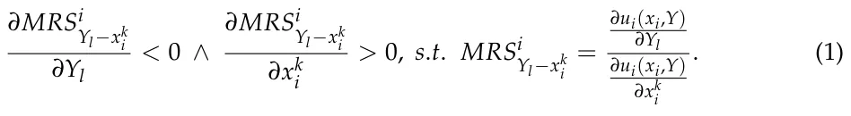
Based on this model definition, a rational agent aims to optimize its own utility function. One can identify two types of equilibria: the Nash and Trading equilibria. The utility does not originate in the initial allocation as it is drawn from the “strategy” which is the division of the initial allocation between the purchase of the private goods and the contribution to the production of the public goods. The Nash (or the voluntary) provision of pure public goods is characterized by the non-cooperative game theoretic notion of Nash equilibrium. Thus,
Definition 1. The Nash equilibrium in our economy is a N-tuple strategy s∗ = (s∗ 1, ..., s∗ N) such that:
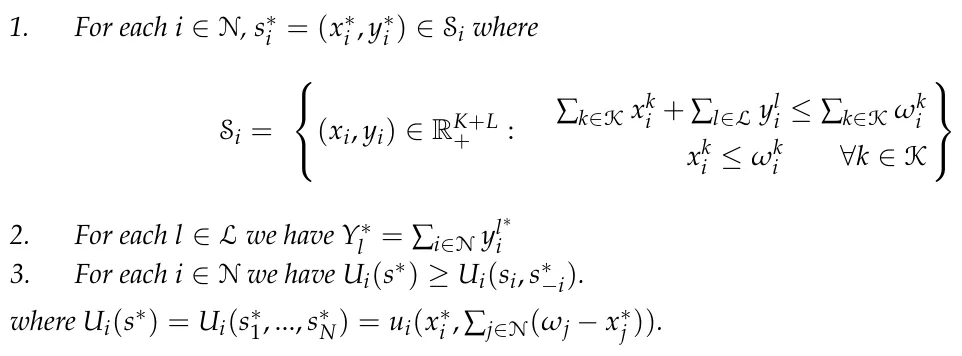
Importantly, since the private and public goods in the proposed framework are by themselves symmetric in nature, we treat the allocation as a set rather than a vector. As such, symmetric allocations are treated as identical. For example, let us assume a single private good and two public goods, indicated by x1, Y1, Y2. For agent i, both strategies (x1 i , y1 i , y2 i ) = (1, 3, 2) and (1, 2, 3) are identical if and only if the utility of the agent from both strategies is identical. This result is possible when both strategies lead to the same final allocation with the same amount of each of the public goods. Hence, there can be a unique Nash equilibrium allocation with an infinite number of strategies leading to that allocation. For more details, see the example in the Appendix A.
In a similar manner, the Trading equilibrium of the proposed model is defined as follows:
Definition 2. The Trading Equilibrium in our economy is an allocation ( ¯¯xi, ¯¯Y) and a non-negative personalized price vector ¯¯pi = ( ¯¯p1 i , ..., ¯¯pL i ) such that:
- 1. ∑k∈K ∑i∈N ¯¯xk i + ∑l∈L ¯¯Yl = ∑k∈K ∑i∈N xk∗ i + ∑l∈L Y∗ l = ∑k∈K ∑i∈N ωk i . 2. ∑k∈K ¯¯xk i + ∑l∈L ¯¯pl i ¯¯Yl ≤ ∑k∈K xk∗ i + ∑l∈L ¯¯pl iY∗ l for each i ∈ N. 3. For each i ∈ N and for each (xi, Y) that satisfies ∑k∈K xk i + ∑l∈L ¯¯pl iYl ≤ ∑k∈K xk∗ + i ∑l∈L ¯¯pl iY∗ l , we have ui( ¯¯xi, ¯¯Y) ≥ ui(xi, Y).
- 4. For each l ∈ L we have ∑i∈N ¯¯pl i = 1.
The four conditions in Definition 2 jointly define the Trading Equilibrium. Therefore, a higher or equal level of global utility relative to the Nash allocation is not, by itself, sufficient to characterize a Trading Equilibrium. Rather, this welfare comparison follows from the definition. In particular, Conditions 2 and 3 establish the link between the Trading allocation and the Nash benchmark. Condition 2 values each agent’s Nash bundle as the agent’s budget under the personalized public-good prices. Since the Nash bundle (x∗ i , Y∗) satisfies this budget constraint with equality, it belongs to the feasible set considered in Condition 3. Therefore, Condition 3 implies ui( ¯¯xi, ¯¯Y) ≥ ui(x∗ i , Y∗)∀i ∈ N. Thus, when global utility is defined as the sum of individual utilities, the Trading allocation satisfies ∑i∈N ui( ¯¯xi, ¯¯Y) ≥ ∑i∈N ui(x∗ i , Y∗). Hence, weakly higher global utility is a consequence of the Trading Equilibrium conditions, rather than an independent condition that defines the equilibrium.
Recall that (x∗ 1, ..., x∗ K; Y∗ 1 , ..., Y∗ L) represents the Nash allocation. Moreover, by the desirability of the commodities we have in condition 2 of definition 2 budget equality (Thus, the budget available for the Trading equilibrium bundle for an agent is the monetary value of his Nash equilibrium bundle). Following these two definitions, we show that the Nash and Trading equilibria exist and are unique. The four conditions in Definition 2 have the following economic interpretation. Condition 1 is the aggregate feasibility condition: the Trading allocation only reallocates the total resources available at the Nash benchmark and therefore does not create or destroy resources. Condition 2 is the individual budget condition: each agent can afford its Trading bundle when its Nash bundle is valued using that agent’s personalized prices for the public goods. Condition 3 is the individual optimality condition: given these personalized prices and the Nash-based budget, the selected Trading bundle maximizes the agent’s utility among all affordable bundles. Condition 4 is the public-good price normalization condition: for each public good, the sum of all agents’ personalized prices equals the unit production cost, so the public good is fully financed through the personalized-price system.
Theorem 1. For the proposed economy, a unique Nash allocation exists.
Proof. In order to show that Nash allocation exists, we need to show that there is an allocation of all the agents in the population such that it is not beneficial for any agent to alter its allocation. Formally, let us define a set of functions µi(S) → R that get the allocation of the entire population and return the utility of the ith agent. Following the original proof by Nash himself, in order to prove the existence of a Nash equilibria, we use the Kakutani fixed-point theorem (Nash, 1950; Yu et al., 2016). To this end, we first have to set Z and Φ where Z is a non-empty, compact, and convex subset of some Euclidean space Rn and Φ : Z → 2Z such that Φ has a closed graph and is non-empty and convex for all x ∈ Z. For our economy, S is defined by the intersection of the amount of private and public goods each agent in the economy can buy—∀i ∈ N : xi + yi ≤ ωi. Under the assumption, at least one agent, i ∈ N, has resources; Z is non-empty. In addition, Z is the intersection of linear constructions that results in a compact and convex subset of Rn. The conditions for Φ are also met according to the economy’s agents’ utility functions assumption. As such, µ := ∑i∈N µi(S), has a fixed point, and therefore the economy has a Nash equilibrium.
In addition, we wish to show that the Nash equilibrium has a unique allocation. Let us falsely assume there are two Nash equilibria, s∗ 1 and s∗ 2 such that s∗ 1/ = s∗ 2. Following the third condition in the Nash equilibrium definition, for every agent in the population, i ∈ N, we must have Ui(s∗ 1) ≥ Ui(si, s∗ −i,1) and Ui(s∗ 2) ≥ Ui(si, s∗ −i,2). In particular, s∗ 1 should satisfy the second condition and the other way around. As such, setting both conditions, we obtain that Ui(s∗ 1) ≥ Ui(s∗ 2) and Ui(s∗ 2) ≥ Ui(s∗ 1) which leads to Ui(s∗ 1) = Ui(s∗ 2). However, this contradicts our initial assumption that s∗ 1/ = s∗ 2 and therefore there is only one Nash equilibrium. For a detailed proof, please refer to the Appendix A.
Theorem 2. For the proposed economy, a Trading allocation exists and is unique inside the allocation space.
Proof. In order to show that a Trading Equilibrium exists, one is required to show that there exists an allocation and a personalized price system satisfying the four conditions in Definition 2. The weak improvement in global utility relative to the Nash allocation is then obtained as a consequence of Conditions 2 and 3, rather than being used as an independent defining condition of the equilibrium. To this end, as each agent in the population proposes searches for the global optimal, we will use the Simplex theorem to show there is an optimum to the objective function (Nabli, 2009). In order to use the Simplex theorem we need to show that the objective function is continuous and derivative to all the parameters and at all possible allocations, and the constraints define finite, close, and concave. To this end, the global utility function u := ∑i∈N ui is a sum of continuous and strictly quasi-concave functions which means it is also continuous and strictly quasi-concave, as required. Next, the constraints of the Simplex task we define are linear as the sum of contributions of each agent to all the private and public goods is limited by the initial amount of resources it has. We also add the fourth definition of the Trading equilibrium, namely that the sum of prices is 1 as a constraint, which is yet another linear constraint. In addition, by definition, agents can not negatively contribute to either a private or public good which enforces a non-negativity constraint for each agent and for each good. Now, following the second and third conditions for the Trading equilibrium, we need to make sure that the Trading equilibria allocation of each agent is at least as good as one of the Nash equilibria allocations of the same agent. To this end, for each agent i ∈ N we add the constraint ui( ¯¯xi, ¯¯Y) ≥ ui(xi, Y). Since ui is assumed to be concave, the intersection of these constraints is still concave as well. Overall, the intersection of constraints defines a finite, close, and concave space. Hence, the proposed economy satisfies the Simplex theorem condition and has a global optimum. This allocation is, by definition, a Trading equilibrium of the proposed economy, showing its existence.
Now, in order to show that the Trading equilibrium is unique, we can use the extreme value theorem (Martínez-Legaz, 2014) while taking into consideration that ∀i ∈ N : Ui is monotonically increasing for every private and public good. Namely, let us falsely assume that there are two trading equilibria, t∗ 1 and t∗ 2. As both are global optimum of ∑i∈N Ui, according to Simplex theorem this can exist if and only if t∗ 1 and t∗ 2 are on the edge of the possible allocation space. As such, if one ignores the edge of the allocation space, the function ∑i∈N Ui is a monotonic and harmonic function. Hence, it obtains a single optimum.
We provide more detailed proof of the uniqueness of the Nash equilibrium allocation that closely follows the definition in the Appendix A. In addition, a numeric example of how one can calculate the Nash and Trading equilibria is also provided in the Appendix A.
4. Computer Simulation
The financial contributions of member states to the UN provide a valuable case study for applying our global public goods provision model with asymmetric agents (states) (Caparros & Finus, 2020). The intricate dynamics between states, each characterized by unique economic conditions, political frameworks, and objectives, closely resemble the heterogeneous agent structure inherent in our model. Furthermore, these contributions highlight the critical differences between Nash equilibria and cooperative (trading) equilibria. A purely self-interested strategy, similar to a Nash equilibrium, may result in suboptimal global outcomes, such as a UN initiative benefiting one nation disproportionately while being inconsequential to others. Conversely, a cooperative framework, wherein states work collectively to optimize global utility, can promote more balanced resource allocation and shared economic benefits. Our model’s mechanism of personalized Lindahl prices finds resonance in international agreements designed to allocate contributions based on a nation’s economic capacity, preferences, and anticipated benefits.
The descriptive contribution patterns reported earlier also help clarify how the benchmark allocation should be interpreted in the simulation. In particular, the concentration of total contributions among a small number of large donors, together with the marked differences between aggregate and per capita rankings, suggests that the observed allocation is highly asymmetric and not naturally interpretable as the outcome of a common proportional or efficiency-based contribution rule. For that reason, the simulation treats the observed contribution pattern as an empirically grounded non-cooperative benchmark rather than as direct evidence that all countries are literally playing a fully specified Nash game in institutional detail. The Nash language should therefore be understood as a reduced-form interpretation of the benchmark allocation used for comparison with the cooperative Trading equilibrium.
To operationalize the proposed model, we developed a computer simulation using Python (version 3.9.2), leveraging historical data to simulate a trading equilibrium. Initially, the simulation begins from the observed historical contribution pattern, which is interpreted as an empirically grounded non-cooperative benchmark and used as the Nash reference allocation for the analysis. Observed country-level budget and contribution data are then used to calibrate country-specific utility weights and resources around this benchmark, so the exercise should be understood as a model-based calibration and counterfactual comparison rather than as a direct empirical validation that member states literally follow fully specified Nash-equilibrium strategies. Utilizing this as a baseline, the model seeks to transition towards the cooperative Trading equilibrium. For the case study, we compiled the contributions of 138 UN member states (for which we have in our possession cross data for both budgets for government ministries and donations to the UN) in U.S. dollars across 10 UN offices (WFP, UNHCR, UNICEF, DPO, IOM, WHO, UN, FAO, UNDP, and UN-DPO). Additionally, each country was assumed to operate 10 local offices serving as private goods, benefiting solely the nation-state3. A sum of a linear and logarithmic function based regression model was fitted to estimate each country’s resources based on the total used budgets of both UN and local offices (adjusted by the average conversion rate for each year), providing projections for 2024.
Specifically, each country’s unique utility function (ui) was estimated by correlating the portion of its budget allocated to different offices with the respective importance it assigns to the services provided. In other words, the utility weight that each country assigns to the services of a government ministry is inferred from the budget allocated to that ministry, fitting the function α1x + α2ln(x) where α1, α2 ∈ R+ are parameters and the function is aligned with the condition in the proposed model and the law of diminishing return (Shephard & Färe, 1974). Similarly, the utility weight attributed to each UN branch, reflecting the value of the global public good, is derived from the monetary contributions made by each country over time, fitted to the same function. This method, using revealed preferences, helps determine the coefficients in each country’s unique utility function for both national private goods (government ministry services) and global public goods (UN services). This results in the weights ζi j, ξi c,1, ξi c,2 ∈ R+ for j ∈ [1, . . . , 10], c ∈ [1, . . . , 1380]. Formally, the utility function of country i (for a representative person within the country) takes the form
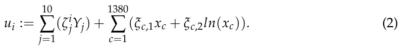
Notably, there are 10 global public goods in the form of UN offices and each country (138 of them) has 10 local offices that operate as private goods, resulting in 1390 goods in total for this configuration. For country k, ξc1, ξc,2/ = 0 such that i ∈ [10(k + 1), 10(k + 1) + 9] and ξc,1 = ξc,2 = 0, otherwise. Importantly, this utility function satisfies the proposed model’s assumptions.
We implemented this economic model in a computer simulation using the agent-based simulation approach (Ciatto et al., 2020; Deguchi, 2004; Heckbert et al., 2010) where each agent (state) in the population is represented using a finite state machine (Sakellariou, 2002) that contains its available resources as well as its current allocation. The simulation operates in rounds, such that each round is denoted by ti such that ti ∈ [0, T] where T < ∞. First, at t0, the initial amount of resources and utility functions of the agents in the population are allocated. Afterward, at each round ti, for each agent (state) in the population, it computes its optimal strategy concerning its utility function and assumes all other agents are available to it. The agents update their strategy at the end of each round after all the agents in the population compute their new strategy. This process repeats until at some round, tN, all agents in the population keep the same strategy as in the tN−1 round. At this point, we iteratively reach the Trading equilibrium using the gradient descent (GD) method (Curry, 1944). The GD stops when the gradient’s norm is smaller than a pre-defined threshold ϵ ∈ R+, which indicates the economy reached the Trading equilibrium.
Table 2 summarizes the main structural, calibrated, and numerical parameters used in the simulation. The structural parameters define the size of the simulated economy and are fixed before the simulation. The calibrated parameters are obtained from the observed country-level budget and UN contribution data. The remaining parameters are numerical choices used to control the convergence procedure.
| Parameter | Description | Value |
|---|---|---|
| N | Number of countries included in the simulation | 138 |
| L | Number of global public goods, represented by UN offices | 10 |
| Ki | Number of private-good categories for each country | 10 |
| K | Total number of private-good entries | 1380 |
| K + L | Total number of goods in the empirical implementation | 1390 |
| ωi | Country i’s available resources | Calibrated from country-level budget data |
| (x∗ i , Y∗) | Observed benchmark allocation | Calibrated from observed contribution data |
| ζi j | Utility weight of country i for global public good j | Estimated from UN contribution data |
| ξi c,1, ξi c,2 | Utility weights for private-good component c | Estimated from national budget data |
| n | Number of simulation repetitions | 100 |
| T | Maximum number of simulation rounds | 200 |
| ϵ | Convergence tolerance for the gradient norm | 10−6 |
| η | Gradient-descent learning rate | 10−3 |
| δ | Initial-condition perturbation around the benchmark allocation | 1% |
Notes: Structural parameters are fixed before the simulation. Country-specific endowments, benchmark allocations, and utility weights are calibrated from the data. The numerical parameters n, T, ϵ, η, and δ control the simulation and convergence procedure. The values of ϵ = 10−6 and η = 10−3 were used as default values because they provide stable convergence without imposing excessive computational burden.
Figure 1 shows the results of this simulation for n = 100 initial conditions with T = 200 and a population of size N = 138 (number of member states for which we have data) where the x-axis indicates the simulation round and the y-axis is the normalized average global utility (the absolute values hold limited significance; therefore, we normalize them relative to the final objective, namely the Trading Equilibrium, to derive a meaningful measure of relative improvement). The blue (solid) line indicates the average case in which all the other cases are normalized with respect to it. The green vertical line indicates the average duration taken to convergence, resulting in the Trading equilibria.
As demonstrated in Figure 1, the implementation of the proposed funding model yields a significant increase in global utility. The initial point reflects the global utility of the UN’s current funding model, which is based mainly on voluntary contributions rather than mandatory payments. In this scenario, the global utility is valued at 0.941 points, following normalization to the Trading equilibria, representing the non-cooperative benchmark allocation used in the model. However, the global benefit under the proposed trading equilibrium model shows about a 6% increase. This represents an improvement in global utility. Moreover, the transition to the proposed model results in a marked increase in the utility for individual states, with an increase in the value of the utility ranging from 2.5% to 7.5%4. It is important to note that the transition to the new financing model did not result in increased contributions from all member states. Notably, two of the largest contributors to the UN (the United States and China) experienced a slight reduction in their required payments. Nevertheless, both their individual benefits and the overall global benefit were enhanced under the new model, demonstrating the efficiency and equity gains achieved through the revised funding mechanism.
The proposed model’s contribution extends beyond the enhancement of private and global utility. Within the model, it also yields a more equitable distribution of financial responsibility for UN activities by linking contributions to the benefits derived from global public goods. These results should be understood as model-based implications of the cooperative benchmark rather than as direct institutional predictions.
In addition, we computed the number of “free riders”—i.e., agents that did not contribute any resource to the production of the public good5. For the Nash equilibrium of each simulation, we obtain 2.02 ± 0.68 percent of free riders while for the Trading equilibrium is 1.38 ± 0.61. Based on a one-tailed T-test, we show that the number of free riders of the Trading equilibrium is statistically less with p < 0.01.
5. Discussion and Conclusions
The UN’s financing mechanisms are crucial for its operational viability and effectiveness in addressing global challenges. The current reliance on earmarked and voluntary contributions poses significant risks to its ability to respond flexibly to crises. Therefore, reforming the funding structure to incorporate diverse and innovative financing strategies is essential for maximizing the UN’s capacity to fulfill its mandate in a rapidly changing global landscape.
The present study has sought to extend the analysis of global public goods provision within the framework of the UN, applying a novel Trading Equilibrium model to simulate and enhance the financing structure of global public goods. The simulation results reveal significant implications for international cooperation, particularly in providing global public goods through multilateral institutions such as the UN.
The findings underscore that a transition from a Nash equilibrium to a Trading equilibrium yields considerable improvements in global utility. In the Nash equilibrium, each member state acts in its self-interest, contributing suboptimally to the financing of global public goods, resulting in uneven benefits across nations. The Trading equilibrium, by contrast, fosters a cooperative framework where member states’ contributions are aligned with their utility, leading to more efficient allocation of resources. This supports the theoretical assertion that cooperative solutions, modeled through mechanisms such as personalized Lindahl prices, enhance the overall welfare of the international system.
In practical terms, this model can potentially address the inherent inefficiencies associated with free-riding behavior and the uneven financial burden observed in the current UN funding structure. By tailoring contributions to each state’s economic capacity and the benefits they derive, the model mitigates the risk of countries underfunding critical UN programs, particularly in sectors such as peacekeeping and humanitarian aid, which are often underfunded due to voluntary, discretionary contributions.
The implications of this study are potentially important for future policy directions aimed at reforming the UN’s financing mechanisms. The current system, which heavily relies on voluntary contributions, faces challenges in terms of predictability and equity. Earmarked contributions, as highlighted by other studies, skew the allocation of resources toward the priorities of wealthier donor states, potentially undermining multilateralism. The Trading equilibrium model presents an alternative that aligns more closely with the principle of burden-sharing, while maintaining the autonomy of member states in deciding their contribution levels based on their national interests.
The simulation results suggest that implementing a cooperative framework for UN financing could improve the alignment between contributions and derived benefits, reduce free riding, and increase global utility relative to the observed benchmark allocation. In that sense, the model provides a normative benchmark for evaluating alternative contribution rules in the UN context.
The results should be interpreted within the scope of the model. The framework provides a cooperative benchmark calibrated to the observed contribution structure, rather than a full institutional representation of all legal, diplomatic, and political determinants of UN financing. Its purpose is to evaluate whether a benefit-sensitive contribution rule can improve upon the observed benchmark under the maintained assumptions of the model.
While the Trading Equilibrium model presents promising outcomes, it is important to note certain limitations of this study. Firstly, the model assumes that all member states are rational actors, willing to cooperate under the right conditions. However, in practice, geopolitical considerations, domestic politics, and differing priorities among member states can hinder cooperation. Future research could explore how such political dynamics might affect the implementation of this model in real-world settings. In reality, individuals and countries operate with bounded rationality, meaning their decisions are often based on incomplete information and limited processing power. This assumption, while necessary for tractability in the current model, diverges from real-world behavior, where strategic decisions regarding public goods provision are made under uncertainty and with constraints on data availability and computational resources. Future research should aim to relax these assumptions to better reflect the decision-making processes of real-world agents. One possible direction is to incorporate elements of bounded rationality or imperfect information into the model, allowing for the exploration of how these factors impact the convergence to Nash or Trading equilibria. In particular, agent-based simulations that account for different information structures and learning mechanisms could provide valuable insights into how equilibria emerge in more realistic public goods economies.
Moreover, the model’s focus on financial contributions does not fully capture other forms of participation and cooperation that are critical to the UN’s effectiveness, such as political support, operational capacity, and diplomatic engagement. Expanding the model to account for these non-monetary contributions could provide a more comprehensive understanding of how to optimize global public goods provision in multilateral contexts. A further limitation concerns the weight-fitting procedure described in Section 4. The available data do not distinguish with sufficient resolution between assessed contributions, voluntary core (un-earmarked) contributions, and voluntary non-core (earmarked) contributions for all observations. As a result, when a country is observed contributing only through assessed payments to a UN program, the data may reflect an obligation rather than the country’s revealed valuation of that activity. This limits the precision with which the fitted weights can be interpreted as direct measures of utility.
A further avenue for future research would be to extend the present framework so that it captures broader institutional and non-monetary benefits associated with participation in the UN system. In the current model, utility is tied to private goods and modeled public-goods benefits. However, participation in the UN may also generate wider collective effects, including contributions to political and economic stability, institutional credibility, diplomatic coordination, and related forms of international cooperation. One natural extension would therefore be to augment the utility specification to include an additional institutional component reflecting such broader collective effects. This would allow the framework to speak not only to the allocation of financial contributions, but also to the wider institutional value that participation in international organizations may create.
Taken jointly, the study highlights the potential for improvements in the efficiency and equity of UN financing within the framework of the proposed Trading Equilibrium model. By aligning contributions with both economic capacity and national benefits, the model provides a normative benchmark for thinking about alternative international financing mechanisms. Further research is needed to account for political and non-monetary factors in the international system and to assess the institutional feasibility of such reforms in practice.
The reliance on voluntary contributions often results in unpredictable and politically influenced funding, limiting the UN’s ability to plan effectively. Within the framework developed here, a shift toward obligatory contributions structured around personalized pricing could improve the alignment between contributions and benefits and provide a useful benchmark for the evaluation of alternative financing arrangements for critical global programs.
Supplementary Materials: The following supporting information can be downloaded at: https://www.mdpi.com/article/10.3390/economies14070263/s1.
Author Contributions: Conceptualization, L.S. and T.L.; methodology, L.S. and T.L.; software, L.S. and T.L.; validation, L.S. and T.L.; formal analysis, L.S. and T.L.; investigation, L.S. and T.L.; resources, L.S. and T.L.; data curation, L.S. and T.L.; writing—original draft preparation, L.S. and T.L.; writing—review and editing, L.S. and T.L.; visualization, L.S. and T.L.; supervision, L.S. and T.L.; project administration, L.S. and T.L. All authors have read and agreed to the published version of the manuscript.
Funding: This research received no external funding.
Data Availability Statement: The data used in this study are presented in the paper with the relevant references.
Conflicts of Interest: The authors have no relevant financial or non-financial conflicts of interest to disclose.
Appendix A
Appendix A.1. The Nash Provision in Our Economy
Below, we present a detailed proof of the uniqueness of the Nash equilibrium allocation.
Theorem A1. In our economy, for each i ∈ N and k ∈ K we have xk∗ > 0, where xk∗ > 0 is agent i i i’s consumption of the private good k at the unique Nash equilibrium allocation.
Proof. Since each i ∈ N is endowed with a strictly positive amount ωi = (ω1 i , ..., ωK i ) ∈ RK++ of the private goods and for each agent, i ∈ N, the preference relation is defined over his consumption bundles in RK+L , where all commodities are strictly desired over + RK+L ++ and agents are indifferent between all bundles on the boundary of RK+L , then by + the individual rationality condition we get that each i ∈ N will prefer the allocation in which he contributes half of any quantity of private good in his possession (and distributes the total contribution equally among the public goods) and all the other agents make a non-negative contribution from each private good, rather than an allocation in which there exists k ∈ K for whom xk i = 0. Since for each i ∈ N we have Ui(s∗) ≥ Ui(si, s∗ −i), especially ωk ωk ω1 2 ) i 2 ) i when si = 2 , ..., ωK i 2 ; ∑k∈K( i , ..., ∑k∈K( ∈ RK+L ++ , it follows that for each i ∈ N and L L k ∈ K we have xk∗ > 0. i
Theorem A2. Our finite economy admits a unique Nash allocation. We denote it by ((x∗ i )i∈N, Y∗).
Proof. Assume by negation that there are two Nash equilibria ((x∗ i )i∈N, Y∗) and ((x∗∗ i )i∈N, Y∗∗). Thus, there may be three cases:
1. For each i ∈ N and k ∈ K we have xk∗ = xk∗∗ and there exists l ∈ L for whom i i Y∗ l/ = Y∗∗ is met. l Assume, w.l.o.g., that for this specific l ∈ L we have Y∗ l > Y∗∗ l . Thus, there exists i ∈ N for whom yl∗ i > 0 and for some `k ∈ K we have 0 < x`k∗ < ω`k i . Hence, by the interior i solution condition for Nash equilibrium, we get MRSi (x∗ i , Y∗) = 1. Moreover, Yl−x`k i since for each i ∈ N and k ∈ K we have xk∗ = xk∗∗ , we also get 0 < x`k∗∗ < ω`k i and i i i thus MRSi (x∗∗ i , Y∗∗) = 1. However, since Y∗ l > Y∗∗ and xk∗ = xk∗∗ , it follows Yl−x`k l i i i that, by the strict ordinal normality assumption, we must have MRSi (x∗ i , Y∗) < Yl−x`k i MRSi (x∗∗ i , Y∗∗) = 1. A contradiction. Yl−x`k i
- For each l ∈ L we have Y∗ l = Y∗∗ > 0 and there exists i ∈ N for whom xk∗ = xk∗∗ l i i is met. By Condition 2 of Definition 1 we get ∑l∈L Y∗ l = ∑i∈N ∑k∈K(ωk i − xk∗ i ) . Thus, there exists k ∈ K and i ∈ N for whom we have xk∗ < xk∗∗ ≤ ωk i so that for some i i l ∈ L we get MRSi i (x∗ i , Y∗) = 1. However, since for this specific l ∈ L we have Yl−xk Y∗ l = Y∗∗ and xk∗ < xk∗∗ it follows that, by the strict ordinal normality assumption, l i i we must have MRSi i (x∗ i , Y∗) < MRSi i (x∗∗ i , Y∗∗) ≤ 1. A contradiction. Yl−xk Yl−xk 3. There exists i ∈ N and l ∈ L for whom x∗ i/ = x∗∗ and Y∗ l/ = Y∗∗ l , respectively. i Assume, w.l.o.g., that for this specific l ∈ L we have Y∗ l > Y∗∗ l . Thus, there exists i ∈ N for whom yl∗ > 0 and for some `k ∈ K we have 0 < x`k∗ < ω`k i . Hence, by i i the interior solution condition for Nash equilibrium, we get MRSi (x∗ i , Y∗) = 1. Yl−x`k i Now, if for each i ∈ N and k ∈ K we have xk∗ > xk∗∗ , then by ∑l∈L Y∗ = i i l ∑i∈N ∑k∈K(ωk i −xk∗ i ) there must be `l ∈ L for whom Y∗ `l < Y∗∗ where, by the strict `l ordinal normality assumption, for each i ∈ N and k ∈ K we get MRSi i (x∗∗ i , Y∗∗) < Y`l−xk MRSi i (x∗ i , Y∗) ≤ 1. However, since Y∗∗ > 0 it follows that for some i ∈ N and Y`l−xk `l k ∈ K we must have MRSi i (x∗ i , Y∗) = 1. A contradiction. Thus, if we assume, Yl−xk w.l.o.g, that for this specific l ∈ L we have Y∗ l > Y∗∗ then there exist i ∈ N and k ∈ K l for whom xk∗ < xk∗∗ ≤ ωk i where MRSi i (x∗ i , Y∗) = 1. However, since we have i i Yl−xk Y∗ l > Y∗∗ and xk∗ < xk∗∗ ≤ ωk i , it follows, by the strict ordinal normality assumption, l i i that MRSi i (x∗ i , Y∗) < MRSi i (x∗∗ i , Y∗∗) ≤ 1. A contradiction. Yl−xk Yl−xk
Appendix A.2. Model Computation Example
For a numerical illustration of this paper, consider the following example. Assume all agents share the utility function
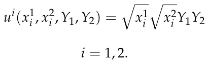
The initial endowment of each agent is
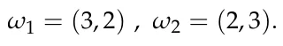
By the interior solution condition for Nash equilibrium, MRSi i (x∗ i , Y∗) = 1, we get Yl−xk ∀i ∈ N:
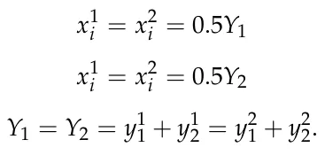
Substituting these results in the budget constraint ∑k∈K xk i + ∑l∈L yl i ≤ ∑k∈K ωk i will yield 0.5Y1 + 0.5Y1 + y1 1 + y2 1 = 5 0.5Y1 + 0.5Y1 + y1 2 + y2 2 = 5.
Vertical summation will yield 4Y1 = 10, thus Y∗ 1 = 2.5 and the unique Nash equilibrium allocation is
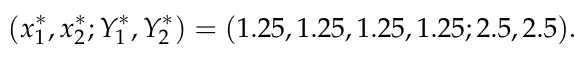
And the utilities are
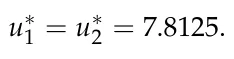
Note that this unique allocation results from infinite possible combinations of Nash strategies. That is, the contribution of the first agent to the production of the first public good depends on and complements the contribution of the second agent to the production of the same public good. This is the case for the production of the second public good. Hence, there may be infinite combinations of the agents’ contributions to the production of the public goods, but the result of all those combinations leads to the same amount of each of the public goods (symmetry of strategies). In the case of our example, the final result is Y∗ 1 = Y∗ 2 = 2.5.
To calculate the Lindahl equilibrium allocation we will use the general rule of Samuelson (1954). That is, for each public good one has ∑i∈N MRSi i = RPTYl−xk i , Yl−xk where RPTYl−xk i = 1 is the rate of technological substitution in production between public and private goods. Thus,
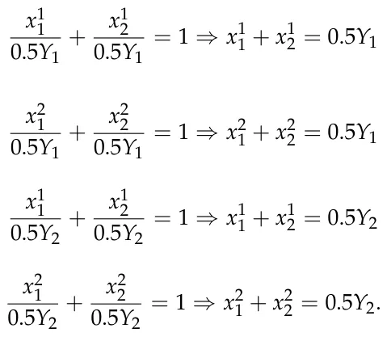
Which yields Y1 = Y2. Placing these results in condition 1 of definition 2 (i.e., ∑k∈K ∑i∈N ¯¯xk i + ∑l∈L ¯¯Yl = ∑k∈K ∑i∈N xk∗ i + ∑l∈L Y∗ l = ∑k∈K ∑i∈N ωk i ) will yield Y1 = Y2 = 11 3, and the Trading equilibrium allocation will be
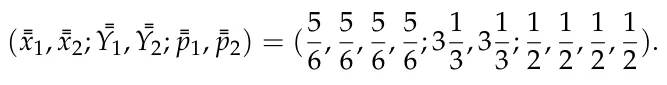
And the utilities are
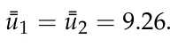
Note that for all i ∈ N we get
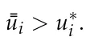
Thus, the Trading equilibrium allocation strictly Pareto dominates (utility-wise) the Nash allocation. That is, all agents would prefer to replace their Nash bundle with their Trading equilibrium bundle.
Appendix A.3. Example of Allocation
Table A1 reports the change from the observed benchmark allocation to the Trading Equilibrium-derived allocation for three selected countries. The comparison illustrates that the cooperative allocation does not necessarily require every country to increase its contribution. Rather, the Trading Equilibrium reallocates financial responsibilities according to the personalized prices and the modeled benefits that each country derives from the global public goods. For example, the United States and China are large contributors in absolute terms under the observed benchmark allocation, but the simulation indicates that their required payments may slightly decline under the Trading Equilibrium. At the same time, their utility increases because the cooperative allocation improves the efficiency with which total resources are transformed into global public-good benefits. This result highlights that the proposed framework is not simply a mechanism for increasing contributions, but a mechanism for reallocating contributions in a way that improves individual and aggregate welfare relative to the benchmark allocation.
| Country | Observed Benchmark | Trading Equilibrium | Absolute Change | Contribution Change | Utility Change |
|---|---|---|---|---|---|
| (Thousand USD) | (Thousand USD) | (Thousand USD) | (%) | (%) | |
| USA | 14,265,536.25 | 13,980,225.53 | −285,310.72 | −2.00 | 4.80 |
| China | 2,489,232.88 | 2,451,894.39 | −37,338.49 | −1.50 | 3.90 |
| Germany | 4,783,235.50 | 4,974,564.92 | 191,329.42 | 4.00 | 5.60 |
Notes
- 1 An allocation of resources is Pareto efficient if it is not possible to make anyone better off without making someone else worse off. However, if resources are allocated in an economically efficient manner, it does not imply equality or fairness.
- 2 The data is freely available at: https://unsceb.org/fs-revenue-government-donor (accessed on 9 June 2026).
- 3 The data is available at: https://data.un.org/Data.aspx?d=SNA&f=group_code%3a301 (accessed on 9 June 2026).
- 4 For a comparison between the two funding models for all member states, and for a more detailed comparison for selected countries, please refer to the Supplementary Materials.
- 5 The free rider phenomenon occurs when individuals or entities benefit from a resource or service without contributing to its cost. For example, in the context of a Nash equilibrium, this phenomenon arises in situations where the equilibrium strategies lead to under-contribution to a public good or resource, due to rational self-interest.
Article notes
- Publication history
- Received 16 February 2026 · Accepted 22 June 2026 · Published 7 July 2026
- Keywords
- cooperative games
- noncooperative games
- public goods
- Nash equilibrium
- Lindahl equilibrium
- trading equilibrium
References
- Abdenur, A. E. (2019). UN peacekeeping in a multipolar world order: Norms, role expectations, and leadership. In United nations peace operations in a changing global order (pp. 45–65). Palgrave Macmillan.
- Alexi, A., Lazebnik, T., & Shami, L. (2023). Microfounded tax revenue forecast model with heterogeneous population and genetic algorithm approach. Computational Economics, 63, 1705–1734. doi:10.1007/s10614-023-10379-2
- Andreoni, J. (1988). Privately provided public goods in a large economy: The limits of altruism. Journal of Public Economics, 35, 57–73. doi:10.1016/0047-2727(88)90061-8
- Arrow, K. J. (1951). An extension of the basic theorems of classical welfare economics. In Proceedings of the second Berkeley symposium on mathematical statistics and probability (Vol. 2, pp. 507–533). University of California Press.
- Barrett, S. (2003). Environment and statecraft: The strategy of environmental treaty-making. Oxford University Press.
- Baumann, M., & Haug, S. (2024). Financing the United Nations: Status quo, challenges, and reform options. Friedrich Ebert Foundation.
- Bergstrom, T., Blume, L., & Varian, H. (1986). On the private provision of public goods. Journal of Public Economics, 29, 25–49. doi:10.1016/0047-2727(86)90024-1
- Browne, S. (2017). Vertical funds: New forms of multilateralism. Global Policy, 8, 36–45. doi:10.1111/1758-5899.12456
- Campos, L. R. (2018). The political economy of UN System operational activities: Overcoming the bilateralization of multilateralism through pooled funds? Monções: Revista de Relações Internacionais da UFGD, 7, 83–115. doi:10.30612/rmufgd.v7i13.8719
- Caparros, A., & Finus, M. (2020). The corona-pandemic: A game-theoretic perspective on regional and global governance. Environmental and Resource Economics, 76, 913–927.
- Champsaur, P. (1975). How to share the cost of a public good? International Journal of Game Theory, 4, 113–129. doi:10.1007/bf01780629
- Chen, C., & Zeckhauser, R. (2018). Collective action in an asymmetric world. Journal of Public Economics, 158, 103–112. doi:10.1016/j.jpubeco.2017.12.009
- Chen, S. H. (2012). Varieties of agents in agent-based computational economics: A historical and an interdisciplinary perspective. Journal of Economic Dynamics and Control, 36, 1–25. doi:10.1016/j.jedc.2011.09.003
- Ciatto, G., Schumacher, M. I., Omicini, A., & Calvaresi, D. (2020). Agent-based explanations in AI: Towards an abstract framework. In Proceedings of the international workshop on explainable, transparent autonomous agents and multi-agent systems (pp. 3–20). Springer.
- Coase, R. H. (1960). The problem of social cost. Journal of Law and Economics, 3, 1–44. doi:10.1086/466560
- Coleman, K. P. (2017). Extending UN peacekeeping financing beyond UN peacekeeping operations? The prospects and challenges of reform. Global Governance, 23, 101. doi:10.1163/19426720-02301009
- Conti, A. A. (2020). Historical and methodological highlights of quarantine measures: From ancient plague epidemics to current coronavirus disease (COVID-19) pandemic. Acta Bio-Medica: Atenei Parmensis, 91, 226–229. doi:10.23750/abm.v91i2.9494
- Cornes, R., & Hartley, R. (2007). Aggregative public good games. Journal of Public Economic Theory, 9, 201–219. doi:10.1111/j.1467-9779.2007.00304.x
- Cornes, R., & Sandler, T. (1996). The theory of externalities, public goods, and club goods (2nd ed.). Cambridge University Press.
- Curry, H. B. (1944). The method of steepest descent for non-linear minimization problems. Quarterly of Applied Mathematics, 2, 258–261. doi:10.1090/qam/10667
- Danziger, L. (1976). A graphic representation of the Nash and Lindahl equilibria in an economy with a public good. Journal of Public Economics, 6, 295–307. doi:10.1016/0047-2727(76)90008-6
- Deguchi, H. (2004). Gaming simulation and the dynamics of a virtual economy. Springer.
- Deneulin, S., & Townsend, N. (2007). Public goods, global public goods and the common good. International Journal of Social Economics, 34, 19–36. doi:10.1108/03068290710723345
- Dijkstra, B. R., & Nentjes, A. (2020). Pareto-efficient solutions for shared public good provision: Nash bargaining versus exchange-matching-lindahl. Resource and Energy Economics, 61, 101179. doi:10.1016/j.reseneeco.2020.101179
- Emeto, T. I., Alele, F. O., & Ilesanmi, O. (2021). Evaluation of the effect of border closure on COVID-19 incidence rates across nine African countries: An interrupted time series study. Transactions of the Royal Society of Tropical Medicine and Hygiene, 115, 1174–1183. doi:10.1093/trstmh/trab033
- Fischbacher, U., & Gachter, S. (2010). Social preferences, beliefs, and the dynamics of free riding in public goods experiments. American Economic Review, 100, 541–556. doi:10.1257/aer.100.1.541
- Foley, D. K. (1970). Lindahl’s solution and the core of an economy with public goods. Econometrica: Journal of the Econometric Society, 38, 66–72. doi:10.2307/1909241
- Galbraith, J. K. (1998). The affluent society. Houghton Mifflin Harcourt.
- Graham, E. R. (2015). Money and multilateralism: How funding rules constitute IO governance. International Theory, 7, 162–194. doi:10.1017/s1752971914000414
- Graham, E. R. (2023). 4 Voluntary funding and financial crisis. In Transforming international institutions: How money quietly sidelined multilateralism at the United Nations. Oxford University Press. Available online: https://academic.oup.com/book/0/chapter/413255641/chapter-pdf/51059246/oso-9780198877936-chapter-4.pdf (accessed on 9 June 2026). doi:10.1093/oso/9780198877936.003.0004 · link
- Hampton, J. (1987). Free-rider problems in the production of collective goods. Economics & Philosophy, 3, 245–273. doi:10.1017/s0266267100002911
- Hardin, G. (1968). The tragedy of the commons. Science, 162, 1243–1248. doi:10.1126/science.162.3859.1243
- Haug, S., Gulrajani, N., & Weinlich, S. (2022). International organizations and differentiated universality: Reinvigorating assessed contributions in United Nations funding. Global Perspectives, 3, 39780. doi:10.1525/gp.2022.39780
- Heckbert, S., Baynes, T., & Reeson, A. (2010). Agent-based modeling in ecological economic. Annals of the New York Academy of Sciences, 1185, 39–63.
- Imtyaz, A., Haleem, A., & Javaid, M. (2021). Analysing governmental response to the COVID-19 pandemic. Journal of Oral Biology and Craniofacial Research, 10, 504–513.
- Jenks, B., & Jones, B. (2013). United Nations development at a crossroads. Center on International Cooperation, New York University.
- Kandel, N., Chungong, S., Omaar, A., & Xing, J. (2020). Health security capacities in the context of COVID-19 outbreak: An analysis of International Health Regulations annual report data from 182 countries. The Lancet, 395, 1047–1053. doi:10.1016/s0140-6736(20)30553-5
- Kaul, I., Grunberg, I., & Stern, M. A. (1999). Global public goods: International cooperation in the 21st century. Oxford University Press.
- Kim, O., & Walker, M. (1984). The free rider problem: Experimental evidence. Public Choice, 43, 3–24. doi:10.1007/bf00137902
- Kindleberger, C. P. (1981). Dominance and leadership in the international economy: Exploitation, public goods, and free rides. International Studies Quarterly, 25, 242–254. doi:10.2307/2600355
- Lindahl, E. (1958). Just taxation—A positive solution. In R. A. Musgrave, & A. T. Peacock (Eds.), Classics in the theory of public finance (pp. 168–176). Macmillan.
- Mailath, G. J., & Postlewaite, A. (1990). Asymmetric information bargaining problems with many agents. The Review of Economic Studies, 57, 351–367. doi:10.2307/2298018
- Martínez-Legaz, J. E. (2014). On Weierstrass extreme value theorem. Optimization Letters, 8, 391–393.
- McGinty, M., & Milam, G. (2013). Public goods provision by asymmetric agents: Experimental evidence. Social Choice and Welfare, 40, 1159–1177.
- Moulin, H., & Shenker, S. (2001). Strategyproof sharing of submodular costs: Budget balance versus efficiency. Economic Theory, 18, 511–533. doi:10.1007/pl00004200
- Nabli, H. (2009). An overview on the simplex algorithm. Applied Mathematics and Computation, 210, 479–489. doi:10.1016/j.amc.2009.01.013
- Nash, J. F., Jr. (1950). Equilibrium points in n-person games. Proceedings of the National Academy of Sciences of the United States of America, 36, 48–49.
- Peleg, B. (1986). A proof that the core of an ordinal convex game is a von Neumann-Morgenstern solution. Mathematical Social Sciences, 11, 83–87. doi:10.1016/0165-4896(86)90006-5
- Perets, H., Shitovitz, B., & Spiegel, M. (2012). Trading equilibrium in a public good economy with smooth preferences and a mixed measure space of consumers. Journal of Mathematical Economics, 48, 163–169. doi:10.1016/j.jmateco.2012.02.001
- Reinsberg, B., Michaelowa, K., & Eichenauer, V. Z. (2015). The rise of multi-bi aid and the proliferation of trust funds. In Handbook on the economics of foreign aid (pp. 527–554). Edward Elgar Publishing.
- Roberts, J. (1989). Lindahl equilibrium. Springer.
- Sakellariou, I. (2002). Agent based modelling and simulation using state machines. In Proceedings of the 2nd international conference on simulation and modeling methodologies, technologies and applications (pp. 270–279). SCITEPRESS.
- Samuelson, P. A. (1954). The pure theory of public expenditure. The Review of Economics and Statistics, 34, 387–389. doi:10.2307/1925895
- Sandler, T. (2004). Global collective action. Cambridge University Press.
- Shephard, R. W., & Färe, R. (1974). The law of diminishing returns. In Production theory: Proceedings of an international seminar held at the University at Karlsruhe May–July 1973 (pp. 287–318). Springer.
- Shi, Y. (2019). Economic description of tolerance in a society with asymmetric social cost functions. Economic Research-Ekonomska Istraživanja, 31, 2548–2593.
- Shitovitz, B., & Spiegel, M. (1998). Cournot—Nash and lindahl equilibria in pure public good economies. Journal of Economic Theory, 83, 1–18.
- Shitovitz, B., & Spiegel, M. (2001). Stable provision vs. cournot—Nash equilibria in pure public good economies. Journal of Public Economic Theory, 3, 219–224.
- Tesfatsion, L. (2002). Agent-based computational economics: Growing economies from the bottom up. Artificial Life, 8, 55–82. doi:10.1162/106454602753694765
- Wyrobek, J., Rosiek, K., & Ni˙znik, J. (2022). Public goods in economics and other social sciences. In Public goods and the fourth industrial revolution (pp. 35–69). Routledge.
- Yu, J., Wang, N. F., & Yang, Z. (2016). Equivalence results between Nash equilibrium theorem and some fixed point theorems. Fixed Point Theory and Applications, 2016, 69.
- Zhang, H. (2021). Challenges and approaches of the global governance of public health under COVID-19. Frontiers in Public Health, 9, 727214. doi:10.3389/fpubh.2021.727214
This page reproduces the article Shami et al. (2026), Economies, doi:10.3390/economies14070263, with the permission of the publisher. Text, tables and figures were extracted from the PDF and the layout adapted for the web; the PDF is the version of record.